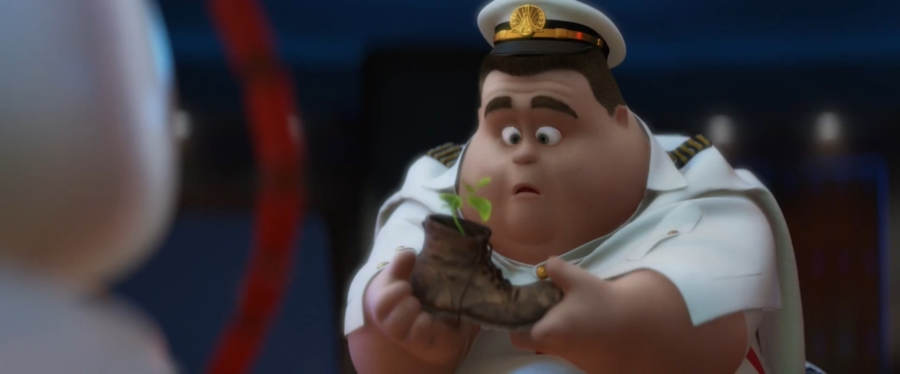

WALL•E (Waste Allocation Load Lifter Earth-Class) is the last robot left on Earth, programmed to clean up the planet, one trash cube at a time. However, after 700 years, he’s developed one little glitch—a personality. He’s extremely curious, highly inquisitive, and a little lonely.

EVE (Extra-Terrestrial Vegetation Evaluator) is a sleek, state-of-the-art probe-droid. She’s fast, she flies, and she’s equipped with a laser gun. EVE, also called Probe One by the captain of the Axiom (the enormous luxury mother ship which houses thousands of displaced humans), is one of a fleet of similar robots sent to Earth on an undisclosed scanning mission.
M-O (Microbe-Obliterator) is a cleaner-bot programmed to clean anything that comes aboard the Axiom that is deemed a “foreign contaminant.” M-O travels speedily around the Axiom on his roller ball, cleaning the dirty objects he encounters.
Auto is the Axiom’s autopilot, who has piloted the ship through all of its 700 years in space. A carefully programmed robot in the form of the ship’s steering wheel, Auto’s manner is cold, mechanical, and seemingly dutiful to the captain.

Captain is the current commander of the Axiom. Trapped in a routine, like WALL•E, the captain longs for a break in the tiresome cycle of his so-called life. His uneventful duties are simply checking and rechecking the ship’s status with Auto, the autopilot.